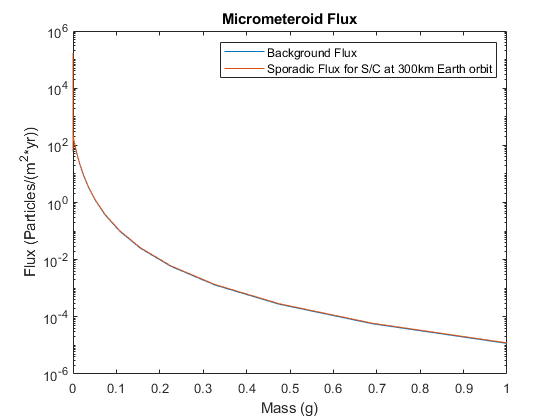

clear ; clc ; close all ;
spaces = 1e2 ;
m = logspace( -16 , 0 , spaces ) ;
m( spaces + 1 ) = 2 ;
ii = 1 ;
while m(ii) <= 1e-14
m3(ii) = m(ii) ;
m2(ii) = 0 ;
m1(ii) = 0 ;
ii = ii + 1 ;
end
while m(ii) <= 1e-9
m3(ii) = 0 ;
m2(ii) = m(ii) ;
m1(ii) = 0 ;
ii = ii + 1 ;
end
while m(ii) <= 1
m3(ii) = 0 ;
m2(ii) = 0 ;
m1(ii) = m(ii) ;
ii = ii + 1 ;
end
for ii = 1:spaces
if m1(ii) > 0
F1(ii) = ( 2.2e3 * m1(ii) * .306 + 15 ).^(-4.38) ;
else
F1(ii) = 0 ;
end
if m2(ii) >0
F2(ii) = 1.3e-9*( m2(ii) + 1e4*m2(ii).^2 + 1e27*m2(ii).^4 ).^(-.36) ;
else
F2(ii) = 0 ;
end
if m3(ii) >0
F3(ii) = 1.3e-16*( m3(ii) + 1e6*m3(ii).^2 ).^(-.85) ;
else
F3(ii) = 0 ;
end
end
F_back = 3.15576e7 .* ( F1 + F2 + F3 ) ;
fgrav = 1 + 6478/(6378+300) ;
fshield = ( 1 + cos( sin( 6478/(6378+300) ) ) )/2 ;
fdist = ( 1.8 + 3*sqrt( 1 - (6478/(6378+300))^2 ) ) / 4 ;
F_sp = F_back * fgrav * fshield * fdist ;
figure
semilogy( m(1:spaces) , F_back , m(1:spaces) , F_sp )
xlabel( 'Mass (g)' )
ylabel( 'Flux (Particles/(m^2*yr))' )
title( 'Micrometeroid Flux' )
legend( 'Background Flux' , 'Sporadic Flux for S/C at 300km Earth orbit' )
